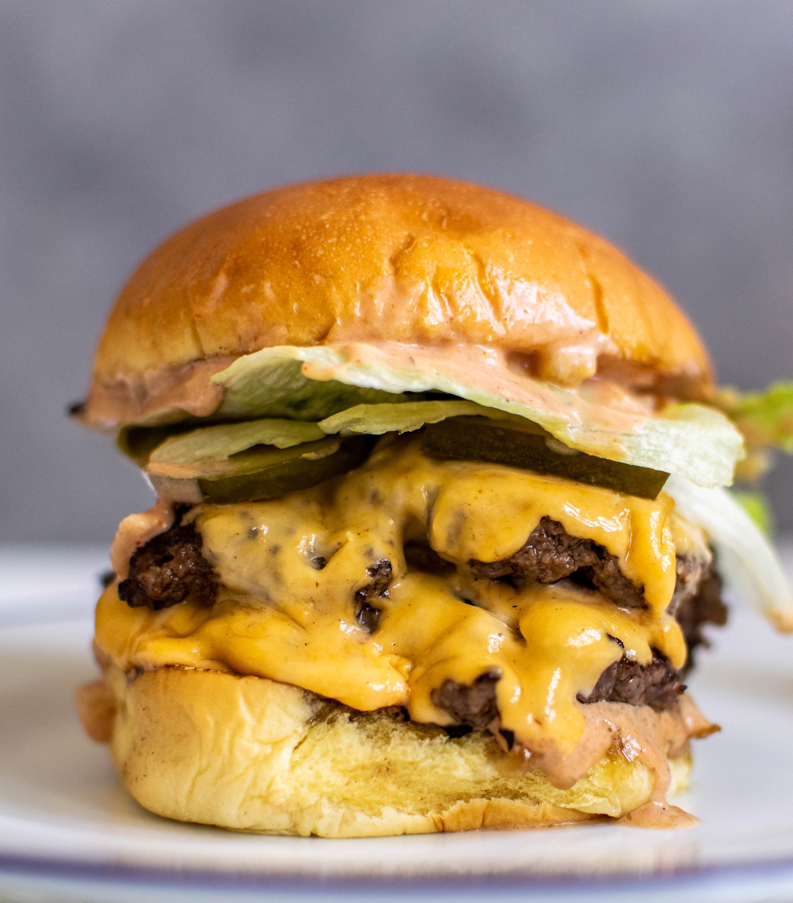

Smash Burgers

Description
Different from a traditional burger, this smash burger is smaller and has a little bit of a crust.
That's not to say it doesn't taste amazing though! Combined with a special sauce, this smash burger recipe
is sure to change the way you see burgers.
Ingredients
- Ground beef
- Smash burger sauce
- American cheese
- Buns
- Pickles
- Onions
Steps
- Roll the ground beef into small balls
- Place the beef balls in the skillet and smash them flat with a spatula
- Cook for 2 minutes then flip, do not smash again after flipping
- After 1 minute, put a slice of American cheese on both burgers and then baste the oil onto the cheese to melt
- After cheese is melted, put the patties on a bun
- Assemble burger with pickles, onions, smash burger sauce, and whatever other toppings you choose and enjoy!